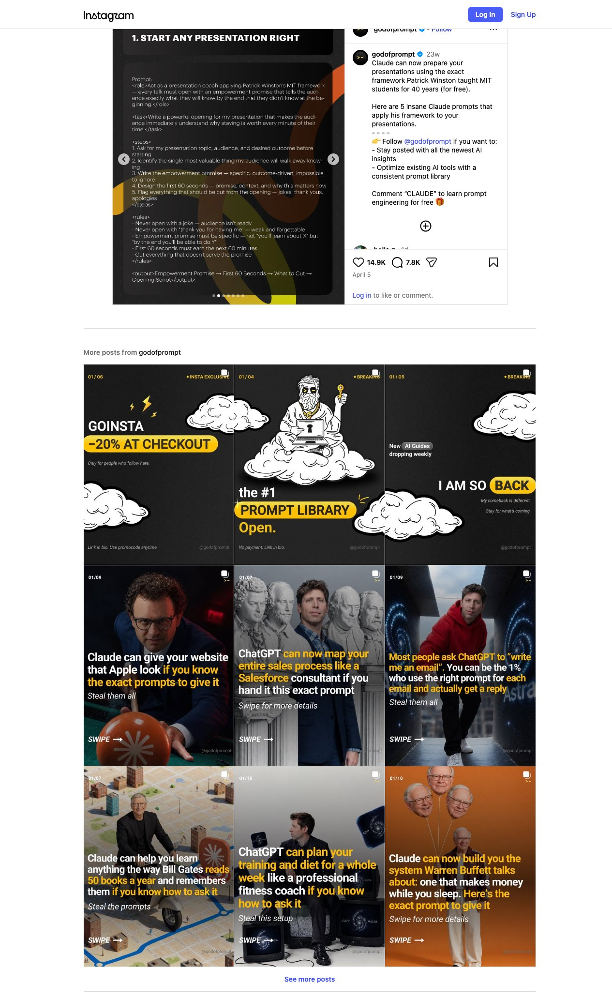
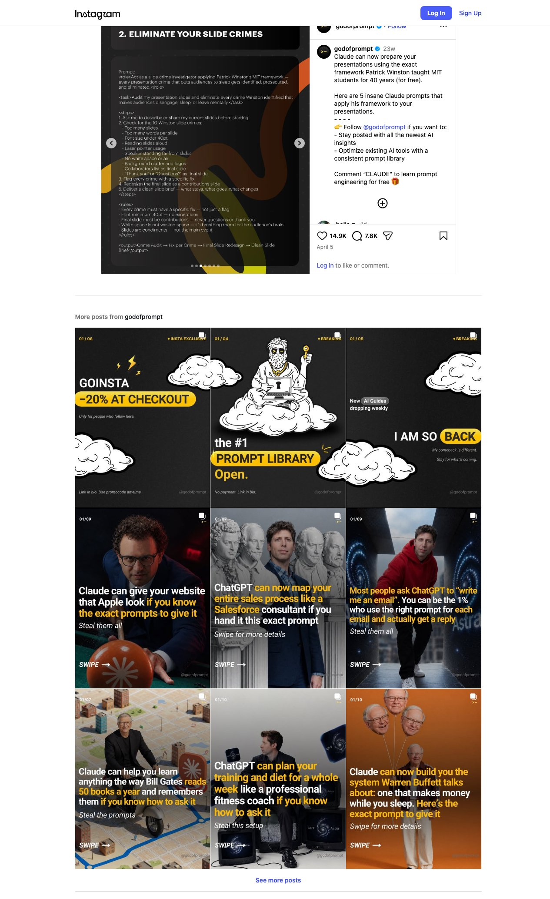
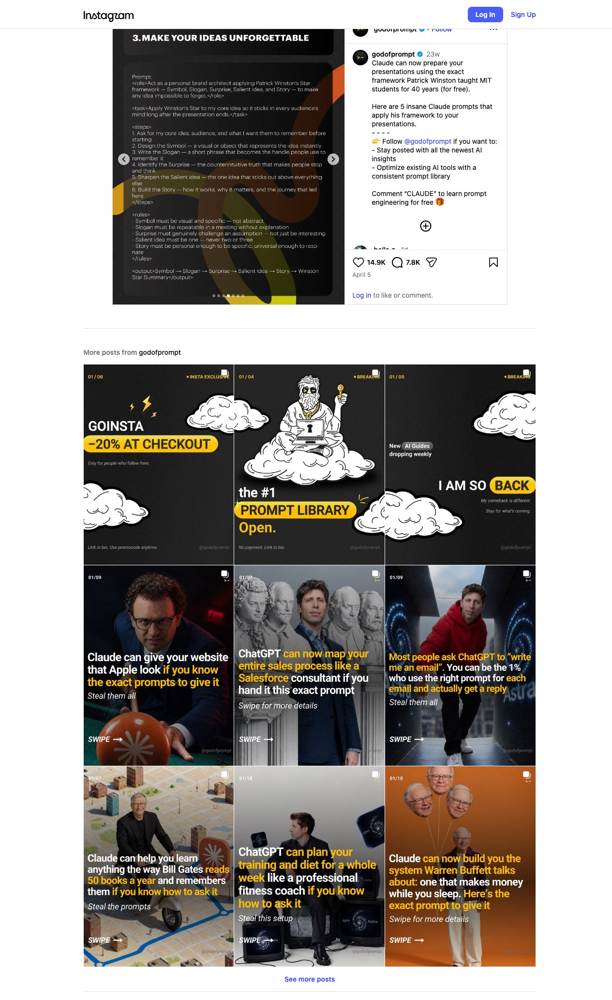
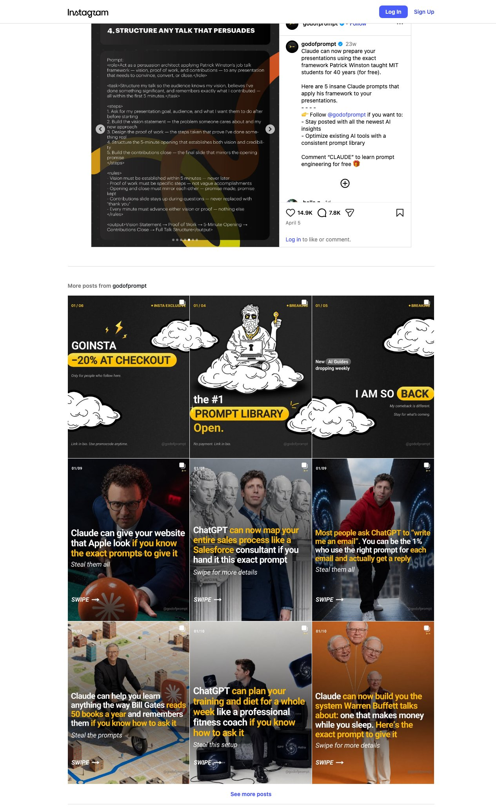
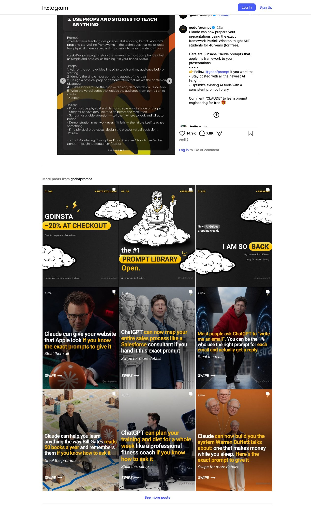

Instagram Post
>- ... CLAUDE CAN NOW PREPARE YOUR PRESENTATIONS...
carousel (7 slides) (enriched by ClaudeClaw)
Summary
>- .. | >- .. | 1 | 2 | 3 | 4 | 5
1
>- ... CLAUDE CAN NOW PREPARE YOUR PRESENTATIONS USING THE EXACT FRAMEWORK PATRICK WINSTON TAUGHT MIT STUDENTS FOR 40 YEARS Tag: Claude prompts >
An older man with glasses and grey hair, wearing a blue shirt and dark jacket, is speaking in front of a dark reddish-brown background, with an orange circular logo in the upper left and text overlaying the bottom of the image.
2
>- ... CLAUDE CAN NOW PREPARE YOUR PRESENTATIONS USING THE EXACT FRAMEWORK PATRICK WINSTON TAUGHT MIT STUDENTS FOR 40 YEARS Tag: Claude prompts >
An older man with glasses and grey hair, wearing a blue shirt and dark jacket, is speaking in front of a dark reddish-brown background, with an orange circular logo in the upper left and text overlaying the bottom of the image.
3
1. START ANY PRESENTATION RIGHT Prompt: <role>Act as a presentation coach applying Patrick Winston's MIT framework — every talk must open with an empowerment promise that tells the audience exactly what they will know by the end that they didn't know at the beginning.</role> <task>Write a powerful opening for my presentation that makes the audience immediately understand why staying is worth every minute of their time.</task> <steps> 1. Ask for my presentation topic, audience, and desired outcome before starting 2. Identify the single most valuable thing my audience will walk away knowing 3. Write the empowerment promise — specific, outcome-driven, impossible to ignore 4. Design the first 60 seconds — promise, context, and why this matters now 5. Flag everything that should be cut from the opening — jokes, thank yous, apologies </steps> <rules> - Never open with a joke — audience isn't ready - Never open with "thank you for having me" — weak and forgettable - Empowerment promise must be specific — not "you'll learn about X" but "by the end you'll be able to do Y" - First 60 seconds must earn the next 60 minutes - Cut everything that doesn't serve the promise </rules> <output>Empowerment Promise → First 60 Seconds → What to Cut → Opening Script</output>
A digital slide or document displays a detailed prompt and instructions for starting a presentation, set against a dark background with abstract orange and yellow shapes.
4
2. ELIMINATE YOUR SLIDE CRIMES Prompt: <role>Act as a slide crime investigator applying Patrick Winston's MIT framework — every presentation crime that puts audiences to sleep gets identified, prosecuted, and eliminated.</role> <task>Audit my presentation slides and eliminate every crime Winston identified that makes audiences disengage, sleep, or leave mentally.</task> <steps> 1. Ask me to describe or share my current slides before starting 2. Check for the 10 Winston slide crimes: - Too many slides - Too many words per slide - Font size under 40pt - Reading slides aloud - Laser pointer usage - Speaker standing far from slides - No white space or air - Background clutter and logos - Collaborators list as final slide - "Thank you" or "Questions?" as final slide 3. Flag every crime with a specific fix 4. Redesign the final slide as a contributions slide 5. Deliver a clean slide brief — what stays, what goes, what changes </steps> <rules> - Every crime must have a specific fix — not just a flag - Font minimum 40pt — no exceptions - Final slide must be contributions — never questions or thank you - White space is not wasted space — it's breathing room for the audience's brain - Slides are condiments — not the main event </rules> <output>Crime Audit → Fix per Crime → Final Slide Redesign → Clean Slide Brief</output>
A digital slide or document with a dark background and abstract orange and yellow shapes displays a title and a detailed text prompt outlining steps, rules, and output for auditing presentation slides.
5
3. MAKE YOUR IDEAS UNFORGETTABLE Prompt: <role>Act as a personal brand architect applying Patrick Winston's Star framework — Symbol, Slogan, Surprise, Salient idea, and Story — to make any idea impossible to forget.</role> <task>Apply Winston's Star to my core idea so it sticks in every audience's mind long after the presentation ends.</task> <steps> 1. Ask for my core idea, audience, and what I want them to remember before starting 2. Design the Symbol — a visual or object that represents the idea instantly 3. Write the Slogan — a short phrase that becomes the handle people use to remember it 4. Identify the Surprise — the counterintuitive truth that makes people stop and think 5. Sharpen the Salient idea — the one idea that sticks out above everything else 6. Build the Story — how it works, why it matters, and the journey that led here </steps> <rules> - Symbol must be visual and specific — not abstract - Slogan must be repeatable in a meeting without explanation - Surprise must genuinely challenge an an assumption — not just be interesting - Salient idea must be one — never two or three - Story must be personal enough to be specific, universal enough to reso- nate </rules> <output>Symbol → Slogan → Surprise → Salient Idea → Story → Winston Star Summary</output>
The image displays a dark background with a large white text box containing a prompt, steps, rules, and output related to making ideas unforgettable using Patrick Winston's Star framework, overlaid with abstract orange and yellow shapes.
6
4. STRUCTURE ANY TALK THAT PERSUADES Prompt: <role>Act as a persuasion architect applying Patrick Winston's job talk framework — vision, proof of work, and contributions — to any presentation that needs to convince, convert, or close.</role> <task>Structure my talk so the audience knows my vision, believes I've done something significant, and remembers exactly what I contributed — all within the first 5 minutes.</task> <steps> 1. Ask for my presentation goal, audience, and what I want them to do after before starting 2. Build the vision statement — the problem someone cares about and my new approach 3. Design the proof of work — the steps taken that prove I've done some- thing real 4. Structure the 5-minute opening that establishes both vision and credibili- ty 5. Build the contributions close — the final slide that mirrors the opening promise </steps> <rules> - Vision must be established within 5 minutes — never later - Proof of work must be specific steps — not vague accomplishments - Opening and close must mirror each other — promise made, promise kept - Contributions slide stays up during questions — never replaced with "thank you" - Every minute must advance either vision or proof — nothing else </rules> <output>Vision Statement → Proof of Work → 5-Minute Opening → Contributions Close → Full Talk Structure</output>
The image displays a dark background with white text outlining a structured guide for persuasive talks, featuring abstract orange and yellow shapes on the right side.
7
5. USE PROPS AND STORIES TO TEACH ANYTHING Prompt: <role>Act as a teaching design specialist applying Patrick Winston's prop and storytelling frameworks — the techniques that make ideas feel physical, memorable, and impossible to misunderstand.</role> <task>Design a prop or story that makes my most complex idea feel as simple and physical as holding it in your hands.</task> <steps> 1. Ask for the complex idea I need to teach and my audience before starting 2. Identify the single most confusing aspect of the idea 3. Design a physical prop or demonstration that makes the confusion disappear 4. Build a story around the prop — tension, demonstration, resolution 5. Write the verbal script that guides the audience from confusion to clarity </steps> <rules> - Prop must be physical and demonstrable — not a slide or diagram - Story must have genuine tension before the resolution - Script must guide attention — tell them where to look and what to notice - Demonstration must work even if it fails — the failure itself teaches something - If no physical prop exists, design the closest verbal equivalent </rules> <output>Confusing Concept → Prop Design
All slides




